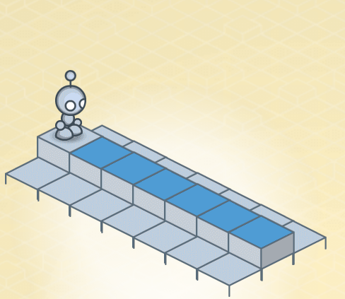

Home
Portfolio
About Me
Lightbot is like a computer because they both mainly operate through inputs and outputs. For a computer, an input like pressing a key on the keyboard will result with an output where the corresponding key on screen.
For lightbot, an input of one 90 degree turn will cause an output of lighhtbot turning in one corresponding direction.Lightbot is also similar to a computer due to it operating in a systematic and consistent method, working purely off of
a changing state. Lightbot is differant from a computer because of how limited its actions are. Lightbot can only preform 5 actions in a maximum of two loops. A real computer can do much more.< /h1>
